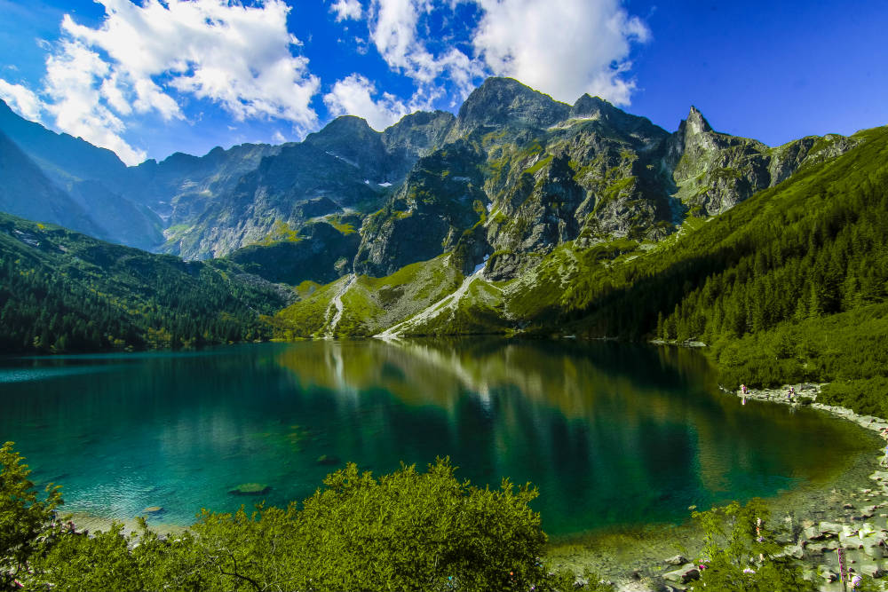
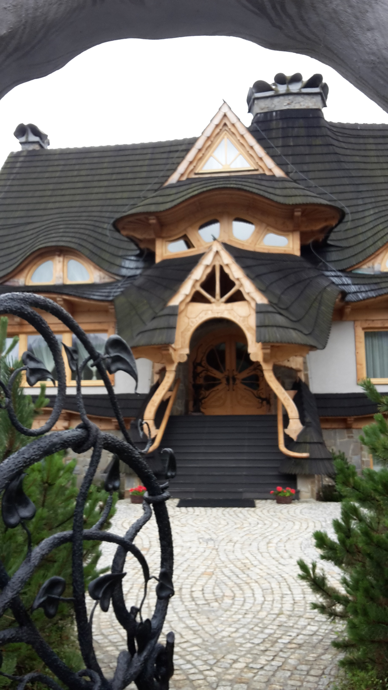
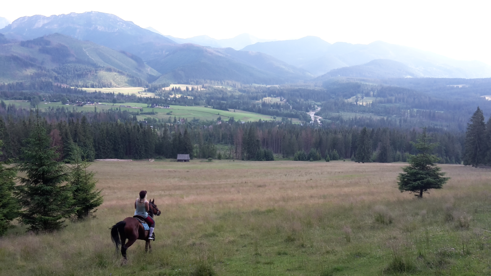

Introduction
One of my hobbies is travalling, I would like to share with you my favorite destination: Tatras in Zakopane.
About Tatras
 The Tatra Mountains occupy an area of 785 square kilometres, of which about 610 km² lie within Slovakia and about 175 km² within Poland. The highest peak, called Gerlach, at 2,655 m, is located north of Poprad, entirely in Slovakia. The highest point in Poland, Rysy, at 2,499 m, is located south of Zakopane, on the border with Slovakia. The Tatras are protected by law by the establishment of the Tatra National Park, Slovakia and the Tatra National Park, Poland, which are jointly entered in UNESCO's World Network of Biosphere Reserves.
The most notable mammals are the Tatra chamois, marmot, snow vole, brown bear, wolf, Eurasian lynx, red deer, roe deer, and wild boar. I already met a Tatra chamois and a brown bear when I was walking in the mountains!!!
About Zakopane
Zakopany is a town in south of Poland at the foot of the Tatra Mountains. Zakopane is a center of Goral culture and is often referred to as "the winter capital of Poland”. It is a popular destination for mountaineering, skiing, and tourism.

I like the architecture of Zakopane,
it's almost wooden houses (maybe it will interests Laurens?) that seem to come from a fairy count.
 Zakopane is visited by over 2,500,000 tourists a year. In the winter, Zakopanes tourists are interested in winter sports activities such as skiing, snowboarding, ski jumping, snowmobiling, sleigh rides, snowshoe walks, and Ice skating. During the summer, Tourists come to do activities like hiking, climbing, bike and horse ride the Tatras mountain, there are many trails in the Tatras.
In Zakopane you can eat delicious dishes for really cheap. Mniam Mniam. The local spaciality is called oscypek, it is a smoked sheep cheese. But my favorite are the nalesniki with chesse or red fruits, it is a kind of pancakes.